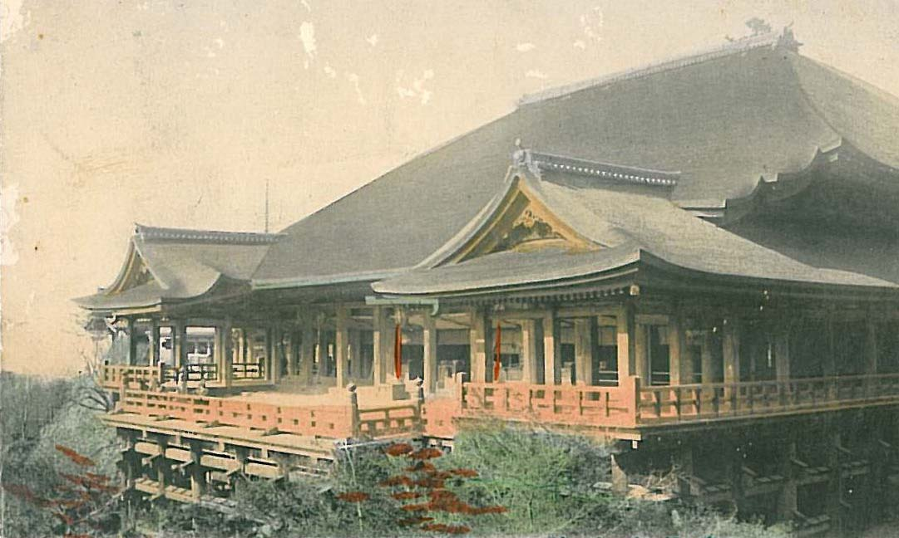

關於京都
About Kyoto

歷史
其歷史起於8世紀建立的「平安京」，於794年起被定為日本首都，此後發展成為日本中古及近代重要的政治與文化中心，至1869年遷都東京為止。歷經千年的發展，京都與東京並列為現今日本最具代表性的文化櫥窗。
地理環境
三面環山屬於盆地地形的京都市，夏天的酷暑和冬天的冷冽是其特徵。春天和秋天雖然是晴天較多的穩定氣候，不過要注意日夜溫差很大。

交通運輸
京都市內四處遍布觀光景點，小範圍區間巴士非常方便，不過常常塞車，最好是與地下鐵、JR和私鐵併用。如果要從京都市內東部向南北移動的話，推薦搭乘京阪電車，如果向嵐山方面走的話，推薦您搭乘JR線或阪急電車。